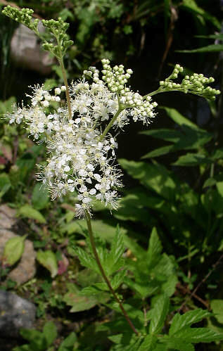

Effet sonore de la page :

La reine des prés, spiraea ulmaria en latin ou plus simplement ulmaire est une plante vivace qui pousse dans les fossés, les prés humides ou au bord des eaux calmes ; elle appartient à la famille des rosacées.
Sa tige dressée, raide et solide peut s'élever à près de 2 m dans des bonnes conditions. Elle part d'une souche rampante du genre rhizome portant des racines et émettant des gros bourgeons blancs et pointus qui sont les futures tiges.
Celles-ci, rougeâtres à la base et de section pentagonale, portent de grandes feuilles composées de 2 à 3 paires de folioles doublement dentées et découpées pour les plus grandes ; la terminale étant beaucoup plus grande. Leur face supérieure, avec des nervures très marquées en creux, est rugueuse au toucher. Leur long pétiole rigide est accompagné de stipules à la base.
De juin au mois d'août, la plante épanouit ses nombreuses petites fleurs blanc-jaunâtre, groupées en corymbes d'aspect gracieux... Elles dégagent un agréable parfum fruité.
Les fruits sont arrondis, ils présentent à maturité un aspect spiralé.
On la multiplie par semis ou plus simplement par division de la touffe.
Cette plante a une valeur décorative certaine par ses feuilles et par ses fleurs, elle est très rustique et doit être installée dans un sol humide. Attention, elle peut devenir envahissante mais il n'y a aucun problème pour s'en débarrasser puisque la souche est superficielle.
C'est une plante médicinale précieuse qui a une action diurétique puissante , elle soigne particulièrement les rhumatismes ou la goutte, plus généralement, elle a une action antalgique et anti-inflammatoire. Ces effets sont dus à l'acide salicylique qu'elle contient ; sa synthèse donne l'aspirine.
La macération d'ulmaire dans du vin lui confère un goût de muscat. Les fleurs peuvent parfumer les confitures.
Retour à la liste des plantes sauvages
Retour au sommaire Passion d'oiseaux